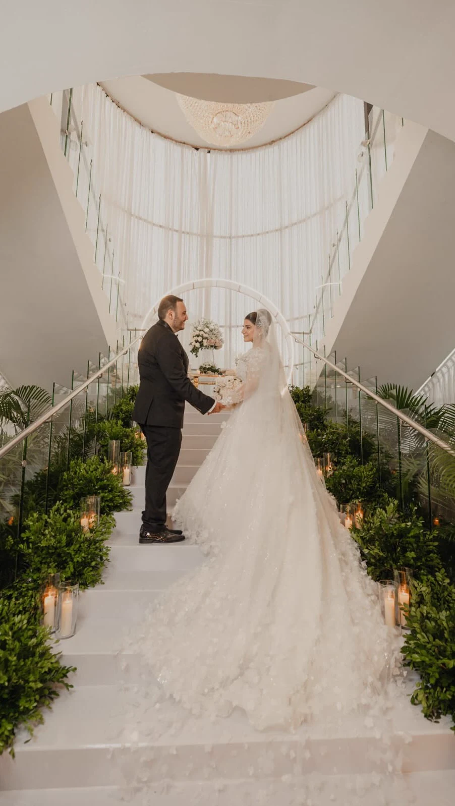

Las flores de su historiaBodas y compromisos
Desde el compromiso hasta el gran día, las flores y los detalles pueden contar su historia. Cuéntanos cómo imaginan la celebración y pensemos juntos en la decoración que la acompañará.
Consultar esta ocasión